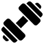

Ich bin Soziologiestudenten im 5. Semester und bringe mir privat Web Development bei. Mein Ziel ist es im Anschluss an das Studium eine Ausbildung zur Fachinformatikerin für Anwendungsentwicklung zu absolvieren. Ich begeistere mich für alles rund um Tech, von Web Development bis hin zu Data Science. Diese Seite wird im Laufe meines Lernprozesses noch weiter ausgebaut. Abgesehen von meinem persönlichen Portfolio gibt es noch viele andere Projekte die ich realisieren möchte. Der folgende link führt zu meinem LinkedIn Account: Mein LinkedIn Abgesehen von meinem Studium und meiner Karriere lese ich gerne in meiner Freizeit, kreiere Content für Social Media und treibe Sport.

Aktuell plane ich mehrere verschiedene Projekte die alle noch in den Startlöchern stehen und die sich weiter entwickeln werden zusammen mit meinem Skillset. Hier möchte ich meine verschiedenen Ideen dennoch schonmal vorstellen.
Du erreichst mich am besten über LinkedIn oder per E-Mail.
Der folgende link führt zu meinem LinkedIn Account: Mein LinkedIn